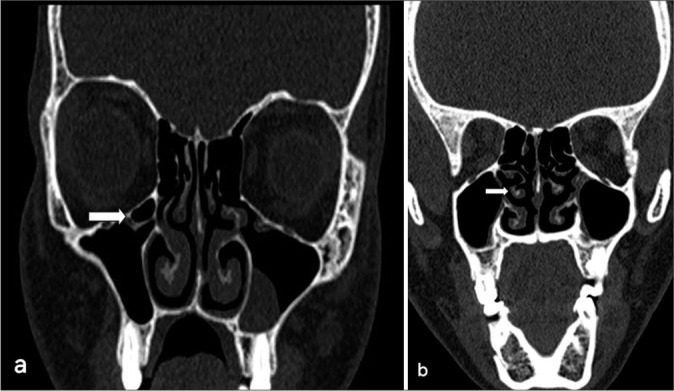

710 — Mũi xoang & OMC: Keros, Haller, concha & mổ an toàn / Sinonasal CT
Tags: pattern:mui-xoang vung:dau-mat-co protocol:CT-mui-xoang
Mức chắc chắn (certainty): tổng hợp y văn (literature synthesis) — nhóm tự biên từ y văn mở, chưa gắn ca nguyên văn đơn lẻ.
1. Tổng quan — OMC tắc là viêm, sàng mỏng là hiểm
- Phức hợp lỗ ngách (OMC): mỏm móc + bóng sàng + khe + lỗ xoang hàm — TẠI SAO tắc OMC = viêm hàm-sàng-trán: 3 xoang chung 1 cửa thoát.
- Mảnh sàng ngoài (lamina papyracea) + trần sàng mỏng như giấy — TẠI SAO Keros III (8–16 mm) nguy hiểm nhất: mái sàng sâu + thành bên thấp = dao mổ lạc vào sọ/mắt.
- Haller (dưới ổ mắt), Onodi (quanh thần kinh thị), concha bullosa (cuốn giữa khí hóa) — chèn OMC + lạc đường mổ.
2. Gamut tắc mũi/viêm xoang (Gamut)
- Tắc OMC + mờ hàm-sàng: viêm xoang mạn — nội soi mở OMC.
- Haller/Onodi/concha + viêm tái diễn: biến thể gây tắc — mổ + sửa biến thể.
- Keros III + Onodi + động mạch sàng: mổ nguy cơ cao — CT < 1 mm + định vị.
- Khối + phá xương + chảy máu: u (inverted papilloma/K) — sinh thiết, đừng nạo viêm mù.
3. Bảng so sánh phân biệt (ma trận đối chiếu)
| Thực thể (entity) | Hình ảnh điển hình | Chốt vào (rule-in) | Chốt loại (rule-out) | Gợi ý xác nhận |
|---|---|---|---|---|
| Viêm tắc OMC | Mờ hàm-sàng + OMC tắc + không phá xương | Tắc cửa + mờ theo dẫn lưu | Phá xương → u | Nội soi + CT |
| Biến thể nguy hiểm | Haller/Onodi/concha + Keros III | Biến thể + viêm tái diễn | Không biến thể → viêm đơn | CT 1 mm + bản đồ mổ |
| Keros sâu | Mái sàng 8–16 mm + sàng thấp | Keros III = dao gần sọ | Keros I (1–3 mm) → an toàn | Định vị + mổ kinh nghiệm |
| U xoang | Khối + phá xương + chảy máu mũi 1 bên | Phá xương + đơn bên + lớn tuổi | Không phá → viêm | Sinh thiết + MRI |

(a) axial + (b) coronal: tế bào dưới ổ mắt (mũi tên) + polyp hàm trái. Nguồn: Taneja et al., J Clin Imaging Sci 2024 Fig. 4, CC BY-NC-SA 4.0.4. Protocol CT mũi xoang
- CT coronal + axial + sagittal lát ≤ 1 mm (xương + mô mềm) trước mọi mổ xoang; đo Keros + liệt kê biến thể.
flowchart TD
A[Viêm xoang/mổ] --> B{CT OMC + Keros?}
B -->|Tắc + Keros I-II| C[Nội soi thường]
B -->|Keros III + Onodi| D[Mổ định vị + kinh nghiệm]
B -->|Phá xương| E[U: sinh thiết]
5. Cạm bẫy
- Lát cắt > 1,5 mm giả khuyết sàng/giấy — coronal mỏng mới kết luận.
- Onodi bỏ sót cắt vào thần kinh thị — đọc axial + sagittal mọi ca mổ bướm.
- Nấm > 70 HU tưởng máu/u — vôi nấm + black turbinate là Mucor (bài 715).
6. Tự lượng giá — Blind Quiz
Ca 1 — Viêm hàm trái tái diễn. Đọc CT.
- Hỏi: tế bào dưới ổ mắt là gì? Có gây tắc không? Keros cần đo thêm gì?
Bấm để hiện đáp án
- Dấu hiệu (findings): tế bào Haller (dưới ổ mắt, mũi tên) + dày niêm mạc hàm trái.
- Chẩn đoán (diagnosis): viêm xoang do biến thể Haller chèn OMC — mổ mở + lấy biến thể (đo Keros + Onodi trước mổ!).
- Nguồn: Taneja et al., Fig. 4, CC BY-NC-SA 4.0.
Ca 2 — Mổ sàng + mù đột ngột 1 bên: tổn thương gì? Biến thể nào? (Bảng mục 3.)
Bấm để hiện đáp án
- Thần kinh thị trong tế bào Onodi: đọc Onodi + định vị trước mọi mổ bướm/sàng sau.
Bài liên quan chéo
- 700 – Tổng quan Đầu Cổ
- [715 – Viêm/nấm xoang (dự kiến viết sau)]
- 235 – Thái dương & xoang (nấm > 100 HU)
Không dùng để chẩn đoán độc lập khi chưa có người hướng dẫn.